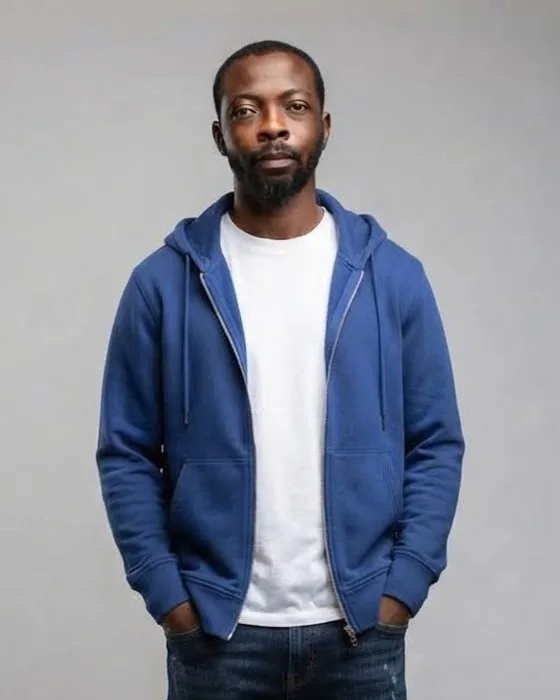
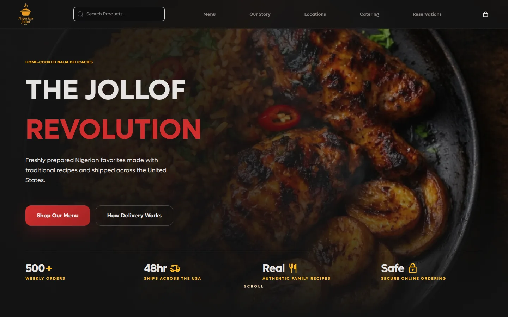
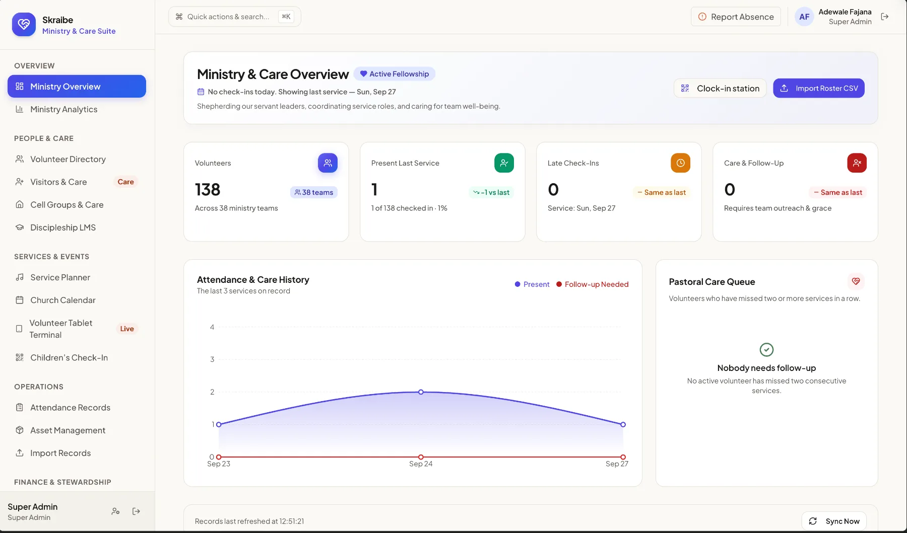

Live with drivers: a crowd-reported station map across 28 states and 451 accredited workshops.
- 28 states
- 451 workshops
React · TypeScript · Supabase
Ten years designing digital products, and I write the code that ships them. Lately: an investment platform with 120 investor accounts, a workforce system serving 144 workers, and a live CNG station map for Nigerian drivers.
Available now/Remote, or happy to relocate. I love Europe.

01 / Work
Most of my work comes back to one problem: getting people to trust a product enough to put their money, time, or daily routine into it.
Live with drivers: a crowd-reported station map across 28 states and 451 accredited workshops.
React · TypeScript · Supabase
Redesigned the entire UI. The in-house team built it, and it's now Payforce by FairMoney.
KYC tiers · Transfers · Bill payments · POS · Receipts

A fractional real-estate platform where one design system runs both the public site and the investor portal.
WordPress · Bricks · PHP

Every dish has accurate tray-size pricing, and customers pick protein and spice level without extra steps.
Storefront design · Ecommerce

Attendance moved out of Google Sheets: 144 workers clock in by GPS, kiosk or QR pass across 38 teams.
Geofenced clock-in · Kiosk · Digital passes
02 / Experience
Tracify Logistics
Rockcity Consulting
Crowdforce, now FairMoney
Nexmove Technologies
Primed E Health
Toolkit
01 / 03
How a product works and how it looks.
Open a folder to see what is inside.
I moved into design at Projaro in 2016, led design at Primed E-Health, and now write the code for my own designs.
Unitora and CNG-Connect are recent proof: I designed the interfaces, built them, and shipped them to real users.
I'm most useful where one person is expected to shape a product and build it. I'm looking for product design or design engineering roles, Europe first and open worldwide.
Off screen I watch Real Madrid and Arsenal, play the drums, and hike the long way round.